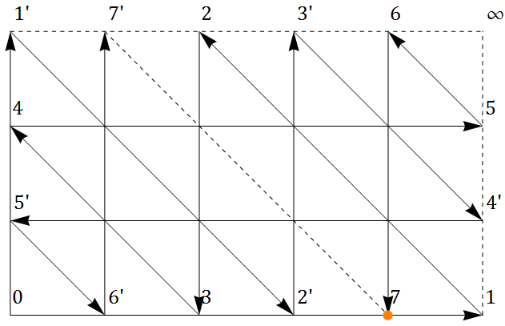
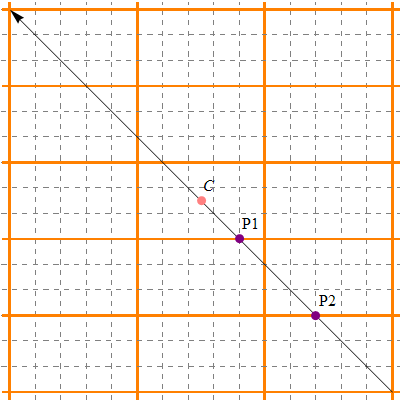

The Juggling of Three Jugs
下面这道题目经常能在杂志的趣味问答版找到：
三个水罐容积分别是L, M, N。L为偶数且L = M + N。现在容积L的水罐里面装满了水，另两个为空，问能否用这些水罐把水平分？
据说历史上不少伟人，比如韩信、泊松以及《虎胆龙威》的男主角，都有过平分液体的经历。本问题的解法需要杂耍般的倒腾水罐，这就是本文标题的由来。
解答：把三个水罐编号为JL，JM，JN。首先，我们可以发现L = M + N是一个关键条件，这么一来只要知道L, M, N中任意两个互质就可以推出三者两两互质。设L, M, N的最大公约数为k，把三个水罐和水按比例k缩小后，新问题与原问题等价。为方便起见，以下我们只针对L, M, N最大公约数为1的情况讨论。显然当L为奇数时，无法量出L/2体积的水。
用代数运算的方式来描述每次倒水，可以知道：操作X→Y实际转移的液体量 = min(Y的容量 - Y中液体体积, X中液体体积)。比如当L=20, M=7, N=13的时候，从初始状态出发：
[20, 0, 0] [L, 0, 0]第一步是从水罐JL到JN
[7, 0, 13] [M, 0, L-M]然后依次是：
[7, 7, 6] [M, M, L-2M]
[14, 0, 6] [2M, 0, L-2M]
...
[3, 7, 10] [9M-3L, M, 4L-10M]
[10, 0, 10] [10M-3L, 0, 4L-10M]这样就把水等分了。以下是Python写的求解程序，用的是BFS (top-down DP, memoization)：
"""
Three Jugs Problem Solver
"""
from collections import defaultdict
from itertools import permutations
def three_jugs(L, M, N, O):
capacities = [L, M, N]
mem = defaultdict(int)
from_to = list(permutations(range(3), 2))
def pouring(state, operation):
state = list(state)
src, dest = operation
v = min(state[src], capacities[dest] - state[dest])
state[src] -= v
state[dest] += v
return tuple(state)
def pour(states, depth):
next = []
for s in states:
if O in s:
print '\nn = %d' % depth
return s
for op in from_to:
new_state = pouring(s, op)
if mem[new_state]:
continue
mem[new_state] = s
next.append(new_state)
if next:
return pour(next, depth + 1)
trace = pour([(L, 0, 0)], 0)
output = []
if trace:
while(trace[0] != L):
output += [repr(trace)]
trace = mem[trace]
print '\n'.join(output[::-1])
three_jugs(*map(int, raw_input().split()))这里变量O是需要倒出的目标体积。来试一下前面那个例子：
20 7 13 10输出：
n = 18
(7, 0, 13)
(7, 7, 6)
(14, 0, 6)
...
(3, 4, 13)
(3, 7, 10)一共需要18次完成，把水平分则要19次。
好，问题解决，灌水结束。
…
且慢！多试几组数据就会发现一个规律：当L为偶数时倒水次数等于L-1。这显然不是巧合，是可以给出严格证明的。
这个命题应该可以用初等数论方法来证，但是弱逼如我，想了好久都没有头绪。于是求助Google，虽然没找到证明，但是发现网上关于Three Jugs Problem基本都在几何法的框架内讨论：我们可以把三个罐子里水的体积作为变量，放在重心坐标系（ Barycentric coordinate system ）里面，因为是三个变量，这样得到的坐标也可以叫做三线坐标（ Trilinear coordinates ）。这么一来就可以把倒水过程想象成平面三角形网格上给定区域里的弹球运动，具体可以看Cut The Knot!上的这篇文章。
果然沿着这个思路想，“Eureka moment”很快就来了：
分析：在题目L = M + N的条件下，可以弹球的范围是一个平行四边形，如果把它掰正了，就可以在一个带左上-右下斜线的矩形网格里面表示，见这里。
来看一个具体的例子。假设L=8，M=5，N=3，那么以水罐JM为横轴，JN为纵轴，可以作一个5×3的网格。从左下角出发，第一步可以向上走或向右走。那么第二步呢？如果再按横线或者纵线走，就会来到右上角的死胡同。这么一来第三步就到不了没访问过的点了。容易证明，一横一斜的走法才是正确的。
下面这张图演示了5×3网格上的倒水路径。标号为7，坐标(4, 0)的点是目标点（在这点上水罐JM里有4个单位的水，另一半的水都在水罐JL里面）。按箭头所示，可以从0出发，经过1、2、3一直移动到7，然后按另一条路径从7’走到1’再返回0。好像有种似曾相识的感觉？Bingo！这不就是哥尼斯堡七桥问题的15桥版嘛。欧拉曾经曰过：如果图中所有的点都是偶顶点，那么一定存在一笔画路径。所以可以遍历出所有的状态，再回到初始点上。

到现在为止，我们起初要证明的倒水问题就等价于这个命题：对于一个N行M列的网格（M、N互质，M + N为偶数且M < N），一定可以在(M + N - 1)步内从(0, 0)点走到((M+N)/2, 0)点。下面给出一个很直观的证法：

先排出一个M行N列的上述网格的阵列。然后从右下角到左上角作一条斜线。不难发现，这条线和矩形边的交点就是倒水的路径依次经过的点。每次它从一个矩形的上方或者左边穿出，再从另一个矩形的下方或者右边穿入，就相当于走了横线或者纵线。而整个图形关于C点（相对坐标为(M/2, N/2)）中心对称，图中的P1点就相当于上面说的7点，经过点C以后就相当于按另一条路径返回。
那么这条线和矩形的交点会不会彼此重复呢？比如说，图中的P1和P2有没可能对于各自小矩形原点的相对坐标一样？答案是否定的，因为如果二者相同，那么就存在k1 < M, k2 < N使得k1×N = k2×M，这和M、N互质的条件不符。有了这个推论，只要算算有几个交点，根据鸽笼原理就可以知道需要倒水几次。
因为从右下角到点C总共经过了(M-1)/2条横线，(N-1)/2条纵线，所以倒水的次数一共是(M-1)/2×2 + (N-1)/2×2+1（第一次倒水） = (M+N-1)步。也就是说，最多(M+N-1)步就可以遍历所有的点，如果可以倒出(M+N)/2的水，那么最多(M+N-1)次就可以办到。至于具体是几次，设离点C下方最近的点是P，那么P对于小矩形原点的坐标就是((M+N)/2, 0)。所以一定是最后一次才能把水等分。 Q.E.D.
附赠画图的Mathematica代码